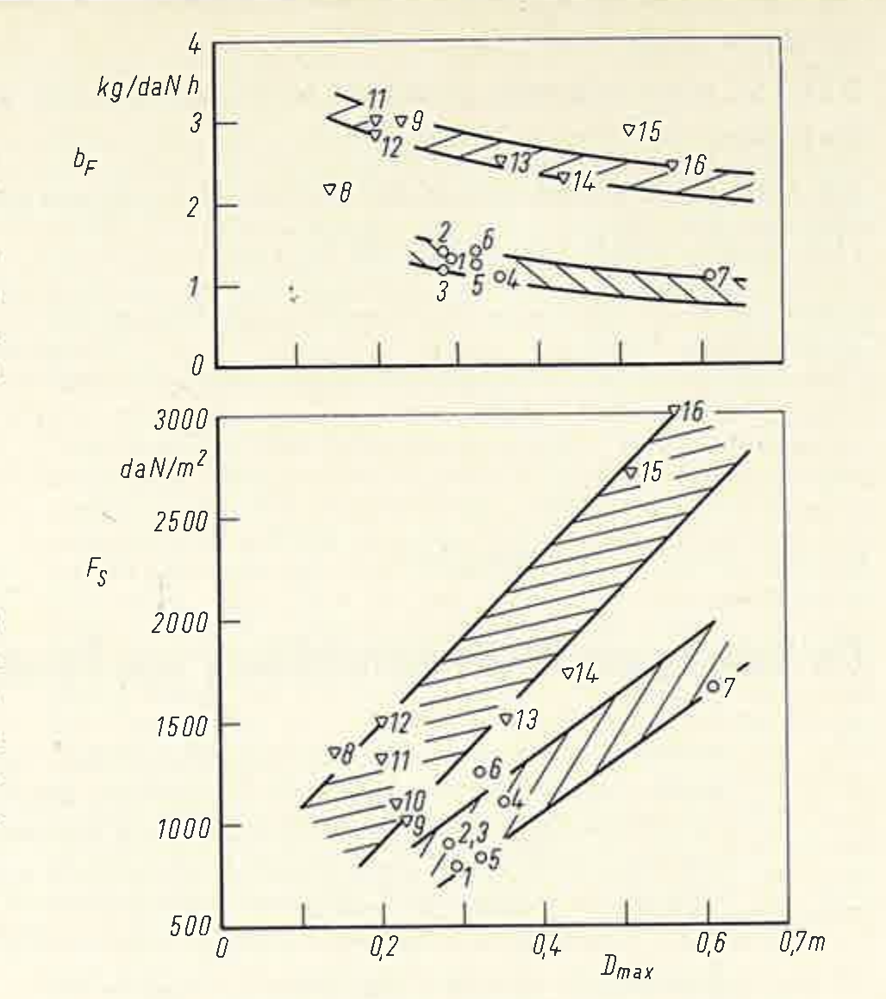
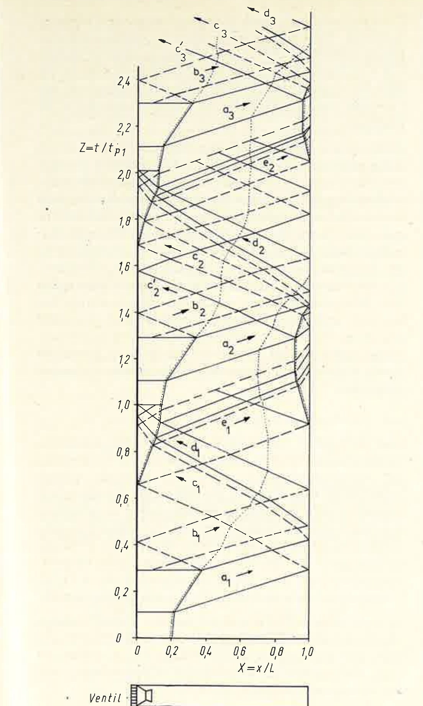
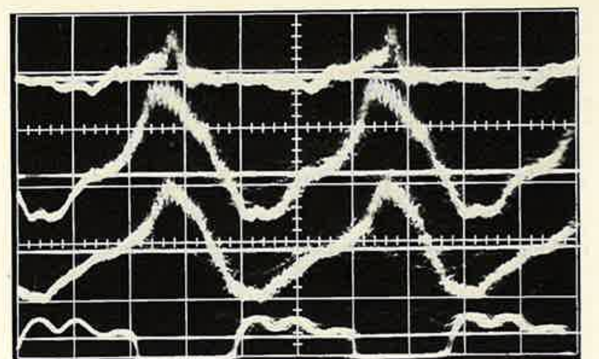
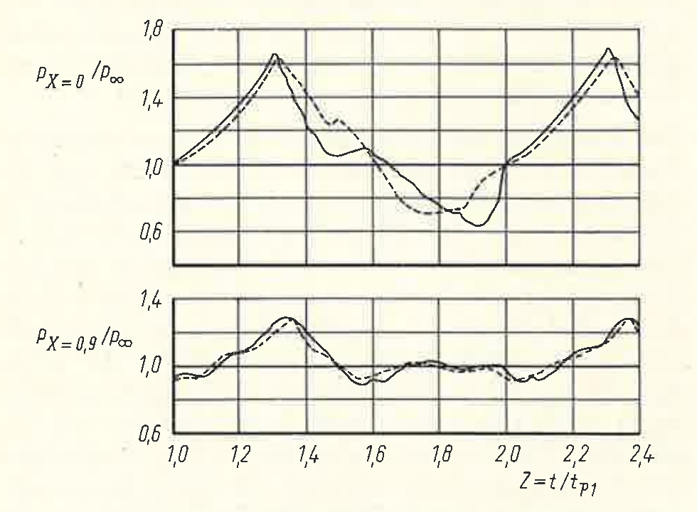
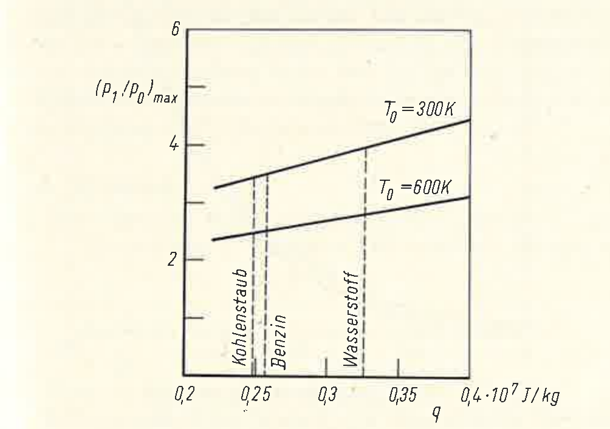
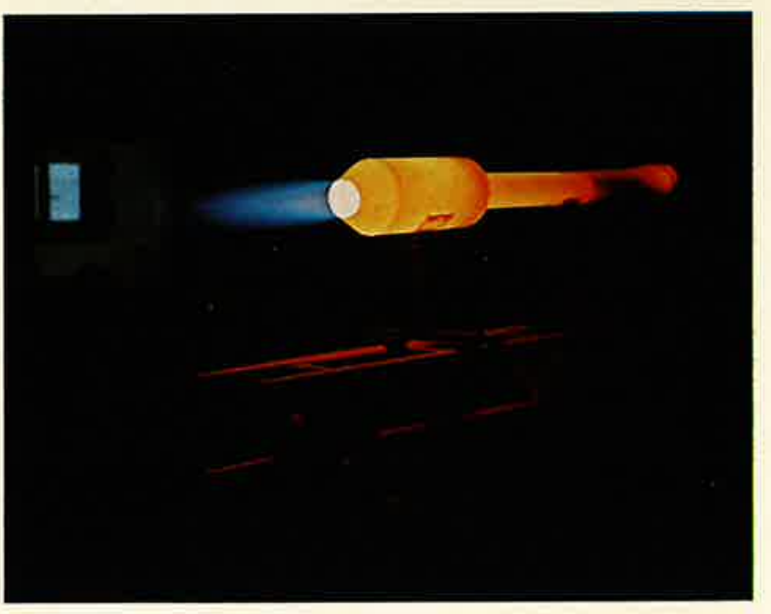
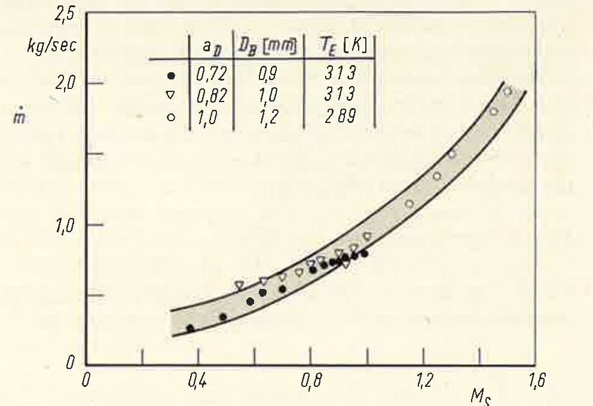
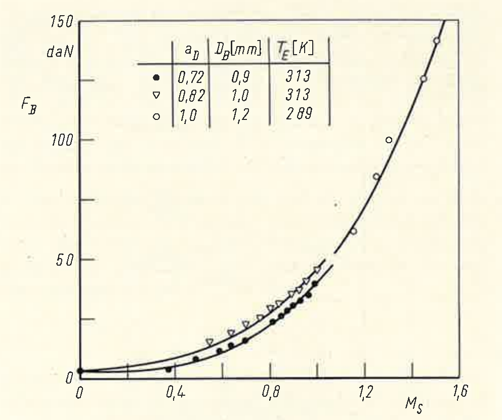
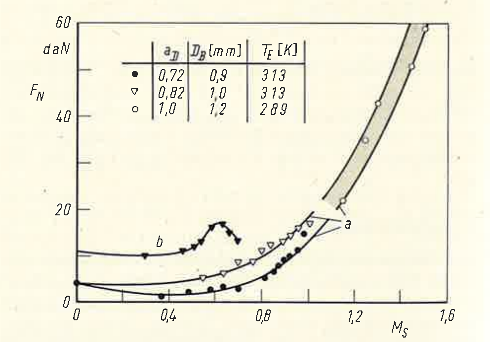

English translation and re-typesetting of Georg Heise, „Ein Beitrag zur Weiterentwicklung von Pulsationstriebwerken“, Zeitschrift für Flugwissenschaften 21 (1973), Heft 6, pp. 189–195, OCR'd from a scan of the printed journal. The original layout, figure placement and running heads are reproduced; all nine figures and the oscillogram are cropped from the scan at its native 300 dpi and are otherwise unretouched, so their axis labels remain in German — German words appearing inside a figure are glossed in its caption. Equations, the nomenclature and Table 1 have been re-typeset. Editorial additions by the translator are marked [like this].
Abstract: It is shown that pulse jet engines in the thrust category below 500 daN have some advantages over turbojet engines. However, they are no longer used for some time, as the flying speed attainable by these engines does not exceed 800 km/h. This speed limit is due to the interaction between the instationary gas motion and the combustion process. An experimental engine developed on the basis of these considerations is described and the test results obtained in a simulated range of Mach numbers of Ms = 0 to 1.5 are indicated. [The author's own English summary, printed in the original alongside German and French versions.]
Pulsejet engines were built in large numbers in Germany during the Second World War and, after 1945, particularly in the USA and France. They were applied mainly in missiles and helicopters. Because they are operable only up to relatively low flight speeds, however, they have long since ceased to be in demand as a propulsion unit. The operating limit lay at at most 800 km/h for the V 1 engine [1], and considerably lower still for the tubes with aerodynamic valves developed by SNECMA [2]. In view of the numerous advantages over other propulsion systems it nevertheless seemed worthwhile to analyse the causes of this operating limit for once, and to examine possible countermeasures in theoretical and experimental work. On the basis of this work an experimental engine was developed which differs from conventional pulsejet engines only in its geometric layout, but which is operable from static conditions into the supersonic range. The measured performance data of this experimental engine make further development into an operational propulsion system appear promising. The pulsejet engine could thus become attractive again, in particular for use in smaller aircraft.
[Units in brackets are an editorial addition; the original nomenclature lists symbols and meanings only. κ is printed as ϰ in the original.]
Pulsejet engines are distinguished by an extremely simple construction. They are therefore cheap to buy, easy to operate, virtually maintenance-free, and have a high thrust-to-weight ratio. On account of their very stable mode of operation they can be throttled over wide limits (control range up to 1 : 7) and are insensitive to strong longitudinal and transverse accelerations. Since no rotating parts are present, the starting process takes only about 1 sec and traversing the whole control range about 2 sec. With turbojet engines these times are many times greater. Insensitivity to the type of fuel used [3] should likewise be emphasised as an advantage.
*) Dornier AG, Test Division (Director: Dr. C. J. Winter).
**) The theoretical and experimental investigations described in this work were financially supported by the Federal Ministry of Defence.
The overhaul interval is, in the case of mechanical valves, set by their durability. Whereas the spring flaps of the V 1 engine were already largely destroyed after a flight time of about 0.5 h [4], a durability of 200 h was later achieved in the USA by sandwich construction [5]. For application in expendable missiles, however, simple valves of correspondingly lower durability will suffice. In these and similar cases the service life of a turbojet engine often bears no relation to the required operating time.
Table 1 assembles some turbojet and pulsejet engines which are compared with one another in Fig. 1 with respect to frontal-area thrust and specific consumption. Turbojet engines of the lower thrust class were considered, which are at present used in missiles or are envisaged for such an application. The pulsejet engines are exclusively tubes with mechanical valves from the period 1940 to 1955. As Fig. 1 shows, the frontal-area thrust of pulsejet engines is markedly higher, while turbojet engines have a more favourable specific consumption. The engine listed under No. 8, however, shows that an acceptable consumption can be achieved with a pulsejet engine as well.
| No. | Manufacturer | Designation | Application | |
|---|---|---|---|---|
| Turbojet engines | 1 | Rover | TJ 125 | Epervier X–4 (reconnaissance drone) |
| 2 | Dreher | TJD–79 A | Sailplanes, intended for drones | |
| 3 | Williams | WR 24–6 | NV–105 Chukar (target drone) | |
| 4 | Microturbo | Eclair | Sailplanes | |
| 5 | SERMEL | TRS 12 | none as yet | |
| 6 | SERMEL | TRS 18 | none as yet | |
| 7 | Turboméca | Marboré VI | Nord M. 20 (target drone) | |
| Pulsejet engines | 8 | Saunders Roe | PJ 1 | Helicopter |
| 9 | NACA | — | Helicopter | |
| 10 | American Helicopter Co. | AJ–8–75 C | Helicopter | |
| 11 | McDonnel | 10–50001 | KDD–1 (target drone) | |
| 12 | McDonnel | J 12 | Experimental engine | |
| 13 | McDonnel | J 9 | Experimental engine | |
| 14 | Arsenal | Pulso-réacteur | Target drone | |
| 15 | P. Schmidt | Sr 500 | Experimental engine | |
| 16 | P. Schmidt | Sr 565 | Experimental engine |

Very good specific consumptions can be attained with the use of aerodynamic valves. With the “Ecrevisse” developed by SNECMA a value of 1.45 kg/daN·h was reached [2], which could later be improved to 0.85 kg/daN·h in the USA [6]. Tubes with aerodynamic valves have not been considered here, however, since they deliver high static thrusts only in a form bent through 180°. This, however, results on the one hand in a large frontal area and on the other in a strong reduction of the attainable flight speed [2].
The unsteady flow processes in pulsejet engines can be calculated with the aid of the graphical method of characteristics [7, 8]. Fig. 2 shows the result of such a calculation in a time–distance diagram (dimensionless time Z, dimensionless distance X, the distance x having been made dimensionless with the tube length L and the time t with the time for the first period tP1). As is evident from the diagram, finite combustion times and the temperature discontinuities occurring at the two inflow regions were taken into account.
The processes are to be triggered at the instant Z = 0 by a single external ignition. The pressure rise on combustion causes a pressure wave a1 to run towards the open tube end, and a corresponding rarefaction wave to run towards the valve, where it is in turn reflected as rarefaction wave b1.

Wave a1 initiates the outflow process at the open tube end and is in doing so totally reflected as rarefaction wave c1. Wave b1 terminates the outflow process. It is totally reflected as compression wave d1, which steepens strongly during its run towards the valve. Wave c1 produces a negative pressure at the valve, so that the latter opens and fresh mixture flows in. This process can be recognised from the dotted particle path. Wave d1 decelerates the inflowing mixture so strongly that a precompression to about ambient pressure takes place. At the same time the self-ignition described in more detail below sets in, so that a new pressure wave a2 is formed and the processes repeat in the same form.
The rarefaction wave c1 is reflected partly at the contact surface between the inflowing mixture and the hot gas, and partly at the valve as rarefaction wave e1. Wave e1 likewise produces an intake process at the open tube end, so that a second contact surface arises there. At this surface the compression wave a2 is partially reflected as compression wave c2′, whereby the characteristic second pressure peak (here at Z = 1.55; see also Fig. 4) is formed.
The back-suction process occurring at the tube end produces a negative thrust component. The total thrust thus follows from the time-varying momenta of the outflowing and inflowing gas masses, a positive mean value being obtained by integration. As regards the pulsejet engine, however, it is simpler to understand the thrust as the sum of those pressure and friction forces which are transmitted from the internal flow to the engine. For a cylindrical tube the static thrust F0 is then obtained, neglecting friction and the pressure fluctuations upstream of the valve, as
Here p(t) is the pressure history in the combustion chamber, which can be calculated by means of the method of characteristics. For a constant valve opening cross-section A(t) becomes a rectangular function satisfying the conditions A(t) = AR for p(t) ≧ p∞ and A(t) = AR − AV for p(t) < p∞. The negative thrust component thus depends on the free opening cross-section of the valve. It could be avoided entirely if the valve, in the opened state, released the whole tube cross-section. In that case the back-suction no longer occurs, since wave c1 would then be reflected with opposite sense, that is, as a compression wave. As will be shown later, however, it is precisely the back-suction that is an important criterion for the functioning of these engines.
For a cylindrical pulsejet engine with an aerodynamic valve, Eq. (1) simplifies to
The thrust is here considerably smaller than with the use of mechanical valves, since the overpressure can be supported only on the area AR − AV. It cannot yet be decided, however, which type of valve is the more advantageous for a supersonic pulsejet engine.
Fig. 3 shows the pressure histories measured with quartz transducers at three different stations of the tube, and the valve motion recorded with a photodiode. The pressure histories at the stations X = 0 and X = 0.9 are presented in Fig. 4 together with the pressure histories calculated from Fig. 2 for the same X-sections. Since the ambient pressure superimposed for X = 0 in Fig. 3 evidently lies too high, it was corrected on transfer to Fig. 4 in accordance with the ambient pressure at X = 0.1. Between calculated and measured pressure history a very good agreement is obtained for X = 0.9, whereas for X = 0 the calculated expansion process proceeds somewhat too rapidly and the amplitude of the intake wave becomes too large on account of the friction that was not taken into account.

As can be recognised from measured pressure histories (e.g. Fig. 3, or very clearly in [9], Fig. 12), combustion begins after the compression wave d has passed through the mixture. This wave must therefore have an essential part in the ignition process. It cannot, however, bring it about directly, since its amplitude of about 0.3 · 105 N/m² is by no means sufficient to compress the mixture to self-ignition. (As tests have shown, even with shock-wave ignition the temperatures behind the shock must be at least equal to the ignition temperatures determined by other means [8].) Only an ignition by heat conduction and diffusion can therefore be present.
This raises the question of the ignition sources. One might at first suspect an axial through-ignition which sets in at the contact surface between mixture and hot gas and then propagates towards the valve. A simple consideration shows, however, that this is not the case. Within one period only a very limited time is available for combustion, since certain times are also required for expansion and for the intake process. In Fig. 2 the combustion time was assumed to be 29 % of the period time, which corresponds to a statistical mean value from measurements of the pressure rise time. The apparent axial combustion velocity following from this value amounts to about 70 m/sec, which is also largely confirmed by tests [10, 11]. In a quiescent petrol–air mixture, however, combustion velocities of 2 to 5 m/sec, and at high turbulence of 20 to 30 m/sec, are measured [12]. An axial through-ignition of the mixture can therefore not be present in pulsating combustion.
Besides the hot gas at the contact surface, further ignition sources must therefore be present in the combustion chamber. These can only be residual gas particles from the preceding combustion, which maintain themselves there in spite of the high flow velocities. The geometry of combustion chamber, valve and injection system must therefore be so constituted that sufficiently large dead-water regions arise during combustion. If the inflowing mixture is now decelerated almost to standstill by wave d, then the flame front can pass through the mixture at low velocity, since its propagation now takes place essentially radially. This process is significantly supported by the strong turbulence behind wave d [13].

The necessary presence of hot residual gases in the combustion chamber leads to a considerable heating of the inflowing mixture. As tests have shown [11], the length of the mixture column is thereby roughly doubled compared with the value to be expected at ambient temperature, so that the true mixture temperature is likely to lie at 600 K. This high initial temperature has a very unfavourable effect on the combustion pressure. In what follows, the pressures attainable in pulsejet engines are therefore to be estimated.
It is first assumed that combustion proceeds in infinitely short time, that is, at constant volume. The combustion pressure ratio p1/p0 then results as a function of the heat added q and the initial temperature T0 as
Since experience shows that a stoichiometric combustion with an efficiency of 95 % may be assumed in pulsejet engines, one obtains from Eq. (3) for petrol a pressure ratio of 11 and 6 for T0 = 300 and 600 K respectively.
The amplitude of the pressure wave generated by an infinitely fast combustion can be obtained from the fundamental equations for unsteady flow processes (e.g. [8]) as
where for simplification the same κ value as in Eq. (3) may be inserted, since its influence in Eq. (4) is only slight. As Eq. (4) shows, even with infinitely small combustion time substantially higher pressures occur in the combustion region than in the rest of the tube.
At finite combustion time a contact surface forms between the burning mixture and the hot residual gases, at which pressure and velocity must be equal on
both sides. If one now assumes a uniform pressure rise for the whole combustion region, then the maximum pressure in the combustion region becomes equal to the amplitude of that compression wave which is generated by the combustion. This assumption agrees well with measurements of the pressure history at various stations of the tube (e.g. Fig. 3). On the other hand, to generate a pressure wave of amplitude p2/p0 at finite combustion time, at least as much energy should be required as at infinitely small combustion time. The combustion pressure attainable in pulsejet engines is therefore at most equal to the amplitude of that pressure wave which is generated by a combustion at constant volume. It must therefore hold:
This yields the combustion pressure ratio maximally attainable at finite combustion time as
This relation is shown in Fig. 5 for the initial temperatures T0 = 300 and 600 K. Since with the combustion chamber designs known hitherto a heating to about 600 K is unavoidable, peak pressure ratios substantially above 2.5 are not to be expected in pulsejet engines. This is also confirmed by evaluable oscillograms in the literature, which, depending on the tube form used, show combustion pressure ratios of 1.6 to 2.5 (e.g. [4, 9, 10, 11, 13]).

The flow processes in pulsejet engines could be regarded in Fig. 2, with sufficient accuracy, as one-dimensional in the mean. For the combustion process this is not correct, since the combustion time is composed of the time for the passage of wave d through the mixture and the time for the radial flame propagation. It is accordingly dependent not only on the length and the temperature of the mixture column, but also on its diameter. If, therefore, at a given tube length the diameter and correspondingly also the valve cross-section of the pulsejet engine are enlarged, then the mixture length and the period time do indeed remain constant, but the combustion time increases. The ratio of tube diameter to mixture diameter must therefore not become too small. The mixture diameter corresponds approximately to the diameter of the orifice plate which is fitted behind the valve and produces the required dead-water regions.
The length of the mixture column is determined by the pressure ratio prevailing at the valve, the inflow resistance and the mixture temperature. In static operation the pressure ratio follows from the strength of the negative-pressure wave c, which arises by reflection of wave a at the open tube end. If a strong cross-sectional constriction is situated there, then wave c is weakened. If, therefore, a quite definite mixture length is to occur per period, then either a corresponding cross-sectional constriction at the tube end or else a reduction of the inflow resistance, i.e. an enlargement of the free valve cross-section, is required. By a cross-sectional constriction at the open tube end, however, not only the negative-pressure wave c but also the compression wave d is weakened. Since both the strength and the steepness of this wave have a considerable influence on the combustion time, cross-sectional constrictions at the open tube end are fundamentally not advisable. The experimental experience shows that even the slightest constrictions of the tube end lead to considerable thrust losses or have complete failure as a consequence. This yields of necessity the requirement that the inflow process must proceed with a certain minimum resistance, it being immaterial whether this resistance is produced mainly by the valve or, for example, by a flame holder situated in the combustion chamber. This resistance conditions the back-suction at the open tube end.
From the requirements named it can be recognised why conventional pulsejet engines are operable only up to relatively low flight speeds. While with increasing flight speed the ram pressure bearing on the valve rises strongly, the pressure ratio prevailing at the valve changes only slightly during the intake phase because of the missing nozzle. The pressure ratio prevailing at the valve thus increases, whereby in turn the length of the mixture column drawn in per period grows for so long until the combustion time becomes too large in relation to the period time. The increase of the mixture length manifests itself at first in a slight thrust improvement, which is then followed by a strong thrust drop. Depending on inflow resistance and tube geometry, the engine then extinguishes at a flight speed of 500 to 800 km/h.
After the foregoing considerations there are, for overcoming the speed limit, the two possibilities of increasing the inflow resistance with increasing flight speed (or of not letting the full ram pressure act on the valve), or of raising the pressure at the open tube end. The first-

named possibility was already proposed for the V 1 propulsion system [7]. It is, however, easy to see that such an inlet throttling is bound up with a simultaneous thrust reduction. As could be estimated by theoretical considerations, a pressure increase at the open tube end proportional to the ram pressure causes, on the other hand, the net thrust to increase with rising flight Mach number. Such a pressure increase can be achieved only if the tube end is connected to the atmosphere via a nozzle. It is then necessary, on account of the reflection conditions, to interpose between tube end and nozzle a tube of larger diameter, in which, with correctly designed nozzle area, a corresponding back pressure can build up. This tube shall in the following be designated the back-pressure section.
Fig. 6 shows the engine conceived according to these considerations during a test run. The engine was first tested in the Dornier test facility up to the speed of sound, and later in the compressor centre of the DFVLR at Trauen in the supersonic range. In all tests the flight condition was simulated by the air supply connected to the engine. This took place via two flexible 90° elbows, so that the exit momentum could easily be measured. For the determination of the simulated flight Mach number and of the inlet momentum, the gas condition upstream of the valve and the mass flow upstream of a vessel acting as a damping element were measured. The temperature of the supplied air (TE) was given by the respective compressor plants used and was not variable, so that with different flight Mach numbers different altitudes were simulated at the same time. TE = 289 K is thereby no longer realistic for flight Mach numbers Ms ≧ 1.3, since the ambient temperature for altitudes above 11 km remains constant.

In Figs. 7 and 8 the measured curves of mass flow and gross thrust (exit momentum) are presented as a function of the simulated flight Mach number. Fig. 9 shows the net thrust history calculated from the measured quantities, together with the measured curve for the same engine without back-pressure section. Whereas the engine without back-pressure section was, as expected, operable only up to Ms = 0.7, with the back-pressure section flight Mach numbers up to Ms = 1.5 could be simulated. Higher values

were unattainable only because of the missing cooling of the engine casing.
In carrying out the tests it emerged that on setting too lean or too rich a mixture, the flame broke away behind the valve. In these cases a pulsating combustion resulted in the back-pressure section, the thrust still amounting to about 80 % of the thrust in

normal operation. With very lean mixture setting a transition from pulsating to continuous operation (ramjet operation) could in some cases also be observed. At the same ram pressure upstream of the valve, that is, the same flight Mach number, the exit momentum then amounted to about 50 % of the exit momentum in pulsating operation. Since the valve is permanently open in this case, the net thrust becomes considerably lower still on account of the higher mass throughput.
With the experimental engine developed at the Dornier company, the experimental proof has been furnished for the first time that the speed limit hitherto present in pulsejet engines can be substantially exceeded, the net thrust rising with increasing flight Mach number. It is the goal of future work to develop, on the basis of the experimental engine, a propulsion system which actually attains in flight the Mach numbers hitherto simulated. The necessary changes will have to relate in particular to the back-pressure section, since in its original form this causes an enlargement of the engine diameter and thus a reduction of the frontal-area thrust.
This disadvantage could be avoided, for example, by having two base engines lying side by side work on a common back-pressure section. The processes in the base engines would then proceed with a phase shift of 180°, whereby a more uniform inlet and nozzle flow would establish itself. With correct design of the back-pressure section, the extreme noise generation of conventional pulsejet engines could in this way also be reduced to a tolerable level.
(Received 17 January 1972)